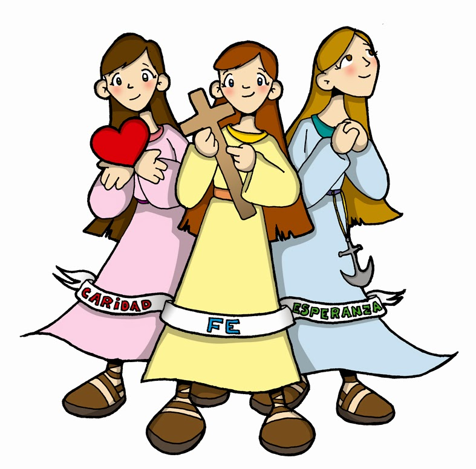
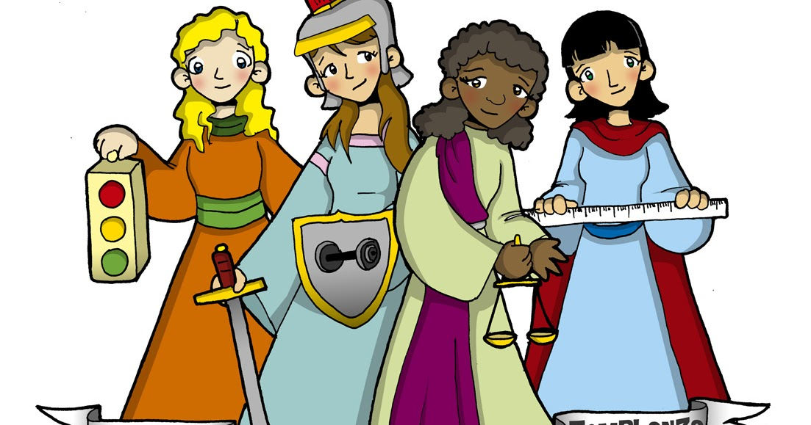
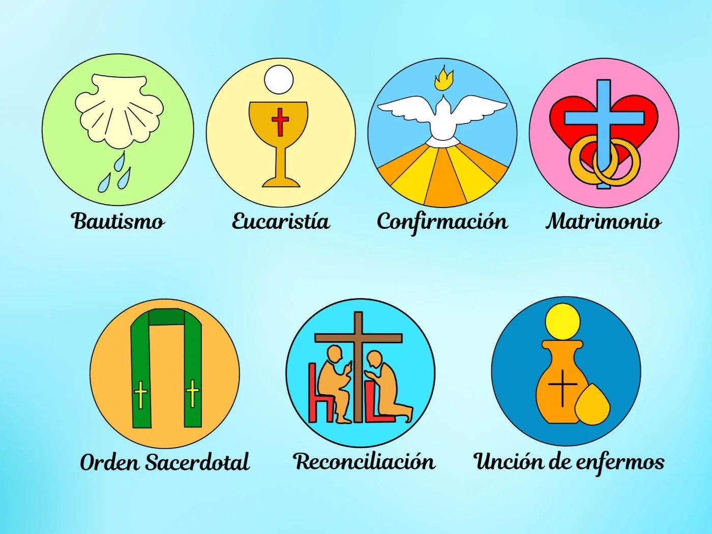
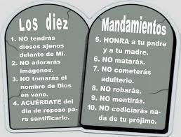
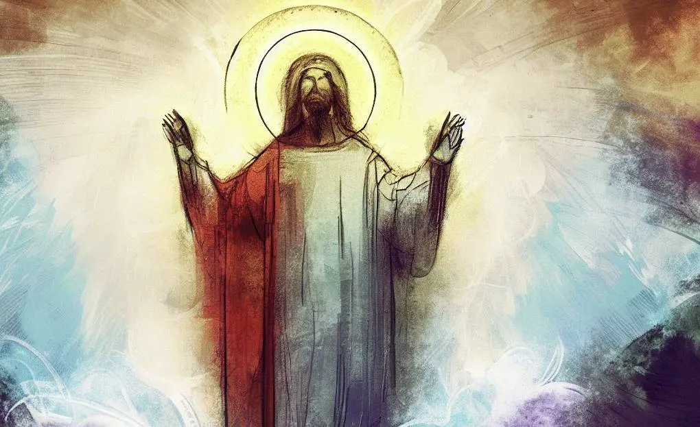
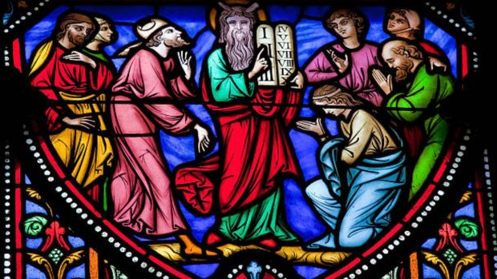

Virtudes Teologales - Ana Montoya
Fe: Creencia firme y confiada en algo o alguien.
Esperanza: Actitud o sentimiento de anticipar y desear que ocurra algo bueno en el futuro.
Caridad: Acto de mostrar amor y compasión hacia los demás sin esperar nada a cambio.
Virtudes Cardinales - Ana Montoya
Prudencia: Capacidad de tomar decisiones y actuar con cautela y discernimiento.
Templanza: Virtud que implica la moderación y el autocontrol en los deseos y placeres.
Fortaleza: Virtud que implica la capacidad de enfrentar y superar desafíos, adversidades y dificultades con valor y determinación.
Justicia: Virtud de práctica para dar a cada persona lo que le corresponde, basada en principios de equidad y moralidad.
Requisitos para que un acto se considere milagro - Ana Montoya
1. Superar las leyes naturales.
2. Ser atribuido a una intervención divina.
3. Confirmar una creencia o propósito espiritual.
7 Sacramentos y en qué consisten - Jennifer Morales
Bautismo: Es aquello que le da un sentido a la vida cristiana. Se limpia a la persona del pecado original y se vuelve un miembro de la Iglesia.
Penitencia: Los fieles consiguen el perdón después del bautismo.
Eucaristía: (Descripción de la Eucaristía aquí).
Confirmación: (Descripción de la Confirmación aquí).
Unción de los enfermos: (Descripción de la Unción de los enfermos aquí).
Orden sacerdotal: (Descripción del Orden sacerdotal aquí).
Matrimonio: (Descripción del Matrimonio aquí).
Libros de la Biblia, Mandamientos y Formas de Concebir a Dios - Terri
Libros de la Biblia: En total son 73 libros. 46 de ellos pertenecen al Antiguo Testamento, y los otros 27 son parte del Nuevo Testamento.
Mandamientos
- Amarás a Dios sobre todas las cosas.
- No tomarás el nombre de Dios en vano.
- Santificarás las fiestas.
- Honrarás a tu padre y a tu madre.
- No matarás.
- No cometerás actos impuros.
- No robarás.
- No darás falso testimonio ni mentirás.
- No consentirás pensamientos ni deseos impuros.
- No codiciarás los bienes ajenos.
Formas de Concebir a Dios
- Animismo
- Teísmo
- Politeísmo
- Monoteísmo
- Panteísmo
- Agnosticismo
- Ateísmo
5 Mandamientos de la Iglesia Católica - Gustavo Alberto Gómez
- Oír misa entera los domingos y fiestas de precepto.
- Confesar tus pecados al menos una vez al año.
- Comulgar por Pascua de Resurrección.
- Ayunar y abstenerse de carne los días prescritos.
- Ayudar a la Iglesia en sus necesidades.
Religión que fundó Jesucristo - Gustavo Alberto Gómez

Jesucristo es la figura central del cristianismo, por lo tanto, fundó el cristianismo. Sin embargo, es importante destacar que Jesús de Nazaret nació y creció en el seno del judaísmo, y su enseñanza inicial estaba dirigida principalmente a los judíos. Jesús se refirió frecuentemente a la Ley de Moisés y a las Escrituras hebreas, y su mensaje inicial se centró en la necesidad de arrepentimiento y en la llegada del Reino de Dios, que era una idea central en el judaísmo. Fue después de su muerte y resurrección que sus seguidores, liderados por los apóstoles, comenzaron a predicar su mensaje a los gentiles (no judíos) y a establecer las bases del cristianismo como una religión distinta del judaísmo. Sin embargo, las raíces judías de Jesús y su enseñanza inicial son fundamentales para entender el contexto y el significado de su mensaje.
JESÚS ES TODO